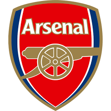

2022~2023 Premier League Ranking (Round 22___23년 02월 02일 04:00 기준)
Introduction to PL teams
- Arsenal
- Manchester City
- Newcastle United
- Manchester United
- Tottenham Hotspur
- Brighton and Hove Albion
- Fulham
- Brentford
- Liverpool
- Chelsea
- Aston Villa
- Crystal Palace
- Nottingham Forest
- Leicester City
- Leeds United
- West Ham United
- Wolveshampton Wanderers
- AFC Bournemouth
- Everton
- Southampton
Arsenal
Arsenal Football Club, commonly referred to as Arsenal, is a professional football club based in Islington, London, England. Arsenal plays in the Premier League, the top flight of English football. The club has won 13 league titles (including one unbeaten title), a record 14 FA Cups, two League Cups, 16 FA Community Shields, one European Cup Winners' Cup, and one Inter-Cities Fairs Cup. In terms of trophies won, it is the third-most successful club in English football.

Arsenal was the first club from the South of England to join the Football League in 1893, and they reached the First Division in 1904. Relegated only once, in 1913, they continue the longest streak in the top division,[2] and have won the second-most top-flight matches in English football history.[3] In the 1930s, Arsenal won five League Championships and two FA Cups, and another FA Cup and two Championships after the war. In 1970~71, they won their first League and FA Cup Double. Between 1989 and 2005, they won five League titles and five FA Cups, including two more Doubles. They completed the 20th century with the highest average league position.[4] Between 1998 and 2017, Arsenal qualified for the UEFA Champions League for nineteen consecutive seasons.
Herbert Chapman, who changed the fortunes of Arsenal forever, won the club its first silverware, and his legacy led the club to dominate the 1930s decade; Chapman, however, died of pneumonia in 1934, aged 55. He helped introduce the WM formation, floodlights, and shirt numbers;[5] he also added the white sleeves and brighter red to the club's jersey.[6] Arsène Wenger is the longest-serving manager and won the most trophies. He won a record seven FA Cups, and his title-winning team set an English record for the longest top-flight unbeaten league run at 49 games between 2003 and 2004, receiving the nickname The Invincibles.
In 1886, munitions workers at the Royal Arsenal in Woolwich founded the club as Dial Square. In 1913 the club crossed the city to Arsenal Stadium in Highbury, becoming close neighbours of Tottenham Hotspur, and creating the North London derby. In 2006, they moved to the nearby Emirates Stadium. With an annual revenue of £340.3m in the 2019~20 season,[7] Arsenal was estimated to be worth US$2.68 billion by Forbes, making it the world's eighth most valuable club,[8] while it is one of the most followed on social media.[9] The motto of the club has long been Victoria Concordia Crescit, Latin for "Victory Through Harmony".